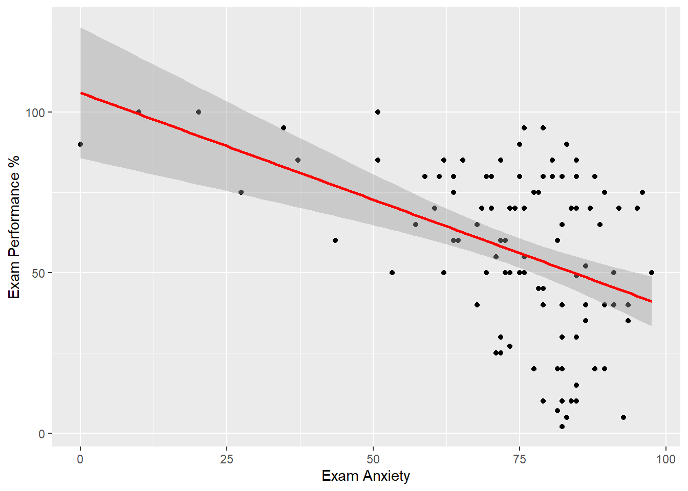
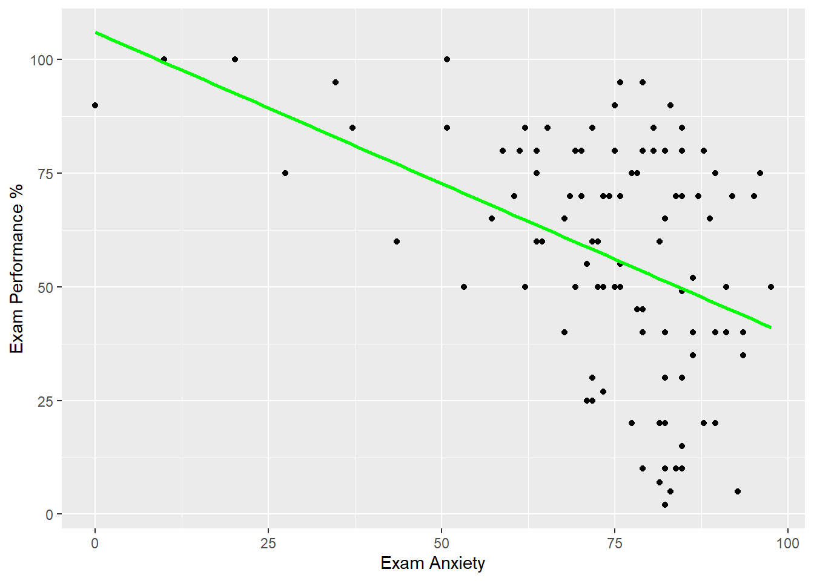
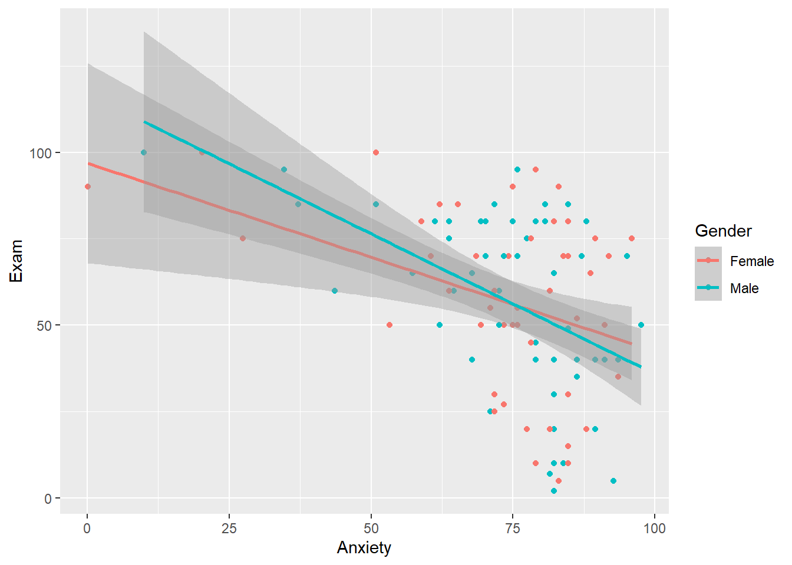
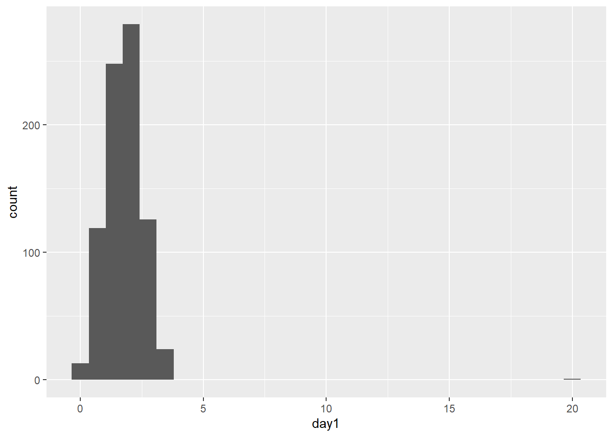
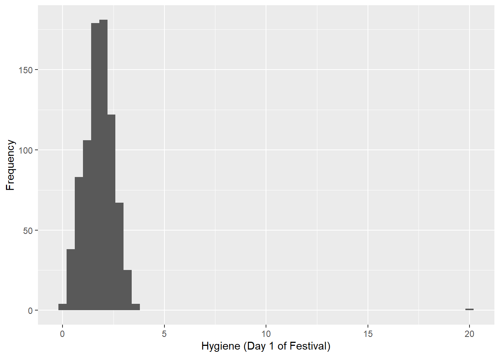
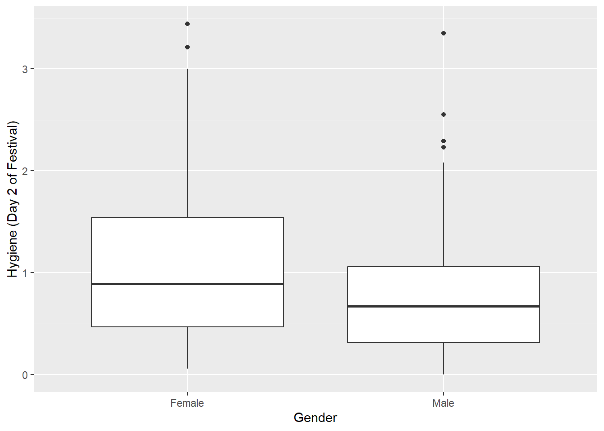
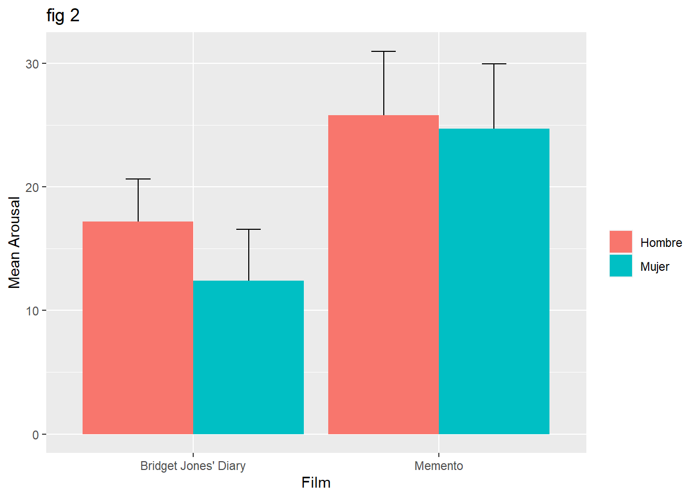

Estadística 101
Introducción
Este curso se basa en Statistics without tears de Derek Rowntree y Discovering statistics using R de Andy Field, Jeremy Miles y Zoë Field. Dicho eso, cualquier error que puedas encontrar es mi responsabilidad.
Este curso también utiliza material del libro "Discovering statistics using R". Este material no me pertenece y es accesible aquí.
Este curso asume que no sabes nada de estadística. Sin embargo, si asume que sabes lo básico de aritmética y fracciones. La mejor manera de aprender es que respondas las preguntas clave de cada capítulo. Y que realizes los ejercicios con la ayuda de Jamovi. La base de datos que vamos a utilizar se encuentra aquí. Y las diapositivas están aquí.
¡Que disfrutes el curso!
Capítulo 1: ¿Qué es la estadística?
Capítulo 1a: ¿Para qué nos sirve la estadística?
Contenido: 4 videos (27 minutos en total)
Parte 1
Parte 2
Parte 3
Parte 4
Preguntas clave:
- ¿Qué es la estadística descriptiva? ¿Qué es la estadística inferencial?
- ¿Qué es una población y una muestra? ¿Qué son los parámetros y los estadísticos?
- ¿Por qué necesitamos obtener una muestra para nuestros experimentos?
¿Por qué necesitamos las probabilidades para análisis estadísticos?
- ¿Que tipos de variables nos sirven para describir una muestra?
- ¿Que significa definir variables y operacionalizar?
- ¿Que es una variable independiente? ¿Que es una variable dependiente?
¿Cómo se construye una hipótesis?
- En un diseño experimental ¿qué es un factor?
- En un diseño experimental ¿qué es un nivel?
- ¿Cuál es la diferencia entre un diseño intra-sujetos y un diseño entre-sujetos?
- ¿Qué es un diseño experimental mixto?
- ¿Qué tipo de prueba se utiliza para comparar dos grupos experimentales?
¿Qué tipo de prueba se utiliza para comparar mas de dos grupos experimentales?
Capítulo 1b: ¿Que es lo más esencial que debería saber?
Contenido: 6 videos (41 minutos en total)
Parte 1
Parte 2
Parte 3
Parte 4
Parte 5
Parte 6
Preguntas clave:
- ¿Qué aspectos son importantes a la hora de diseñar un experimento?
- ¿Qué es la validez de una medición?
- ¿Qué es la replicabilidad de una medición?
¿Qué es un factor confundente?
- ¿Qué hace un prueba estadística (en términos de los cambios que experimenta una variable)?
¿Qué es la variación sistemática? ¿Qué es la variación no sistemática?
- ¿Cuál es la diferencia entre un diseño intra-sujetos y un diseño entre-sujetos?
¿Cuál es la relación entre un diseño experimental y su análisis estadístico asociado?
- ¿Quién fué Roland Fisher?
¿Dé dónde viene el 5% (o p = 0.05) que usamos en estadística?
- ¿Para que se usa la randomización?
- ¿Qué son los efectos de práctica y de aburrimiento en un diseño intra-sujetos?
¿Cómo podemos confeccionar un buen diseño entre-sujetos?
Capítulo 2: ¿Por qué importa tanto tanto la curva normal?
Contenido: 8 videos (1 hora 32 minutos en total)
Parte 1
Parte 2
Parte 3
Parte 4
Parte 5
Parte 6
Parte 7
Parte 8
- ¿Por qué es importante graficar los datos?
- ¿Cómo se calcula la desviación estándar?
¿Qué es la suma de cuadrados (o suma de los errores al cuadrado)?
- ¿Cómo se puede visualizar la "forma" de los datos?
- ¿Qué características tiene la curva normal?
- ¿Cómo estimamos cuantas observaciones caen entre dos valores para una set de datos?
¿Qué porcentaje de los datos esta entre -1 SD y 1 SD?
- ¿Qué significa generalizar nuestros hallazgos?
- ¿Qué es la variación de la muestra (o sampling variation)?
- ¿Qué es el error estándar y como se calcula?
- ¿Qué son los intervalos de confianza?
- ¿Qué significa que cálculemos un promedio con un intervalo de confianza al 68%?
¿Qué significa que cálculemos un promedio con un intervalo de confianza al 95%?
Capítulo 3: ¿Que es un t-test?
Contenido: 4 videos (45 minutos en total)
Parte 1
Parte 2
Parte 3
Parte 4
Parte 5
- ¿Cómo se sabe si dos muestras viene de una misma población o de poblaciones diferentes?
- ¿Para que nos sirve la distribución normal para compara dos muestras?
- ¿Cuál es la hipótesis nula cuando comparamos dos muestras?
- ¿Cómo se refleja un t-test en un modelo lineal general (GLM)?
- ¿Qué representa el intercepto de la ecuación de un GLM para una variable outcome cuando se comparan dos grupos?
- ¿Qué representa la pendiente de la ecuación de un GLM para una variable outcome cuando se comparan dos grupos?
Capítulo 4: ¿Que es un modelo estadístico?
Contenido: 3 videos (39 minutos en total)
Parte 1
Parte 2
Parte 3
- ¿Qué es un modelo estadístico?
- ¿Por qué es importante tener buenos modelos?
- ¿Cómo de determina el error en un modelo?
- ¿Qué son los grados de libertad?
- ¿Cómo se define la línea de la ecuación de un GLM que se ajuste mejor a los datos?
- ¿Cuál es el modelo más básico con el cual se compara un modelo que uno construya?
- ¿Qué es la SS total?
- ¿Qué es la SS de los residuales?
- ¿Qué es la SS del modelo?
- ¿Cómo se establece que un modelo dado explica mejor los datos que un modelo básico?
- ¿Cómo se establece cuan bueno es un modelo comparado con cuan malo es? ¿Lo que explica y lo que no explica un modelo?
Capítulo 5: ¿Que es un ANOVA?
Contenido: 4 videos (53 minutos en total)
Parte 1
Parte 2
Parte 3
Parte 4
- ¿Cómo comparamos varias condiciones experimentales?
- ¿Cuántos distintos tipos de ANOVA existen?
- ¿De qué dependen del tipo de ANOVA que usemos para realizar un análisis?
- ¿Qué es un factor en un ANOVA?
- ¿Qué es un nivel en un ANOVA?
- ¿Qué es un ANOVA mixto?
- ¿En un experimento hipotético con 3 condiciones experimentales por qué no podemos usar 3 t-test?
- ¿Cuanto aumenta el error de tipo 1 cuando aumentamos el número de comparaciones que hacemos?
- ¿Qué es una prueba omnibus?
- ¿Cuáles son los supuestos del ANOVA?
- ¿Qué nos dice el valor F en un ANOVA?
- ¿Por qué el ANOVA se puede representar como una regresión?
- ¿Para que nos sirven las variables ficticias (dummy coding) en el ANOVA?
- ¿Qué es el intercepto en la ecuación que representa el ANOVA?
- ¿Qué indican los coeficientes (o betas) en la ecuación que representa el ANOVA?
Capítulo 6: ¿Y que hago después que calculo un ANOVA?
Contenido: 3 videos (35 minutos en total)
Parte 1
Parte 2
Parte 3
- ¿Que hago después de una prueba omnibus?
- ¿De qué depende el tipo de análisis que se hace después del ANOVA?
- ¿Qué significa que desglocemos la varianza explicada en los distintos contrastes en el análisis de contrastes planificados?
- ¿En un experimento dónde analizo el efecto de dos dosis de droga comparada con un placebo, que contrastes planificados se podrían hacer y que indican el intercepto y los betas de este modelo?
- ¿Por que es importante que el contraste que hagamos sea un contraste ortogonal?
- ¿Para que sirven los contrastes que evaluan una tendencia líneal o cuadrática?
- ¿Qué tipos de pruebas post-hoc existen?
- ¿Cuál es el riesgo que corremos si usamos una prueba post-hoc muy exigente (o conservadora)?
- ¿Cuál es el riesgo que corremos si usamos una prueba post-hoc poco exigente (o conservadora)?
Capítulo 7: ¿Qué conceptos estadísticos debería manejar?
Contenido: 5 videos (46 minutos en total)
Parte 1
Parte 2
Parte 3
Parte 4
Parte 5
- ¿Qué me dice y qué no me dice el valor de p?
- ¿Cómo se interpreta un resultado estadístico nulo?
- ¿Cuál es la diferencia entre una hipótesis de una cola y una hipótesis de dos colas?
- ¿Por qué los criterios de significancia son más altos para una hipótesis de una cola que para una hipótesis de dos colas?
- ¿Qué es un error de tipo I?
- ¿Qué es un error de tipo II?
- ¿Por qué hay un balance entre el error de tipo I y II?
- ¿Qué es mas perjudicial para un estudio? ¿Un error de tipo I o II?
- ¿Qué es el tamaño del efecto?
- ¿Qué es el poder estadístico?
- ¿Qué podemos hacer para que en un proyecto de investigación tengamos las mejores posibilidades de encontrar un efecto que realmente existe?
Programación con R
Capítulo 1
Comentarios
# a <- 1
# always write down your name and the date
#
# JLUF 09/12/2017
# add some general description to your script
# description: getting started with R and some descriptive stats
# always comment!
# always comment!
# always comment!
# let's get started with some basic stuffPaquetes
# R has some built-in functions like: mean (mean), standard deviation (sd) ... etc
# however, many time you will need to install packages
# you can do it by hand, o by typing "install.packages" like in:
# install.packages("foreign")
library(foreign)
# install.packages("Hmisc")
# install.packages("reshape") # uncomment this last one and try it, we will use it later
# next, in order to use the package or library type ...
# library(reshape) # uncomment this and try it
# we will use it later, and it will become clearerAsignación
# let's move on
# __
# /\ \
# / /\ \ assignment ----
# / /__\ \
# \/____\/
a <- 5
b <- 4
# a command line is usually composed of an object and a function
# they are usually separated by a "<-" (which means "created from")
# for instance you can create a dataset with the funtion "c", which means concatenate
# I'm going to create the object "metallica"
metallica <- c("Lars", "James", "Jason", "Kirk")
# this is a vector of characters
# or you can simply type
metallica## [1] "Lars" "James" "Jason" "Kirk"# the [1] means one row, which make sense because is a simple row vector
# you can check the type of data by using "class"
class(metallica)## [1] "character"# you can also check the structure of your data with "str"
str(metallica)## chr [1:4] "Lars" "James" "Jason" "Kirk"# in addition it tells you there are 4 elements
# this is also something you can check within the working space, under "Values"Indices
# __
# /\ \
# / /\ \ indexing ----
# / /__\ \
# \/____\/
# you can also check each element of the objects by using the square brackets
# for instance, the first element
# this is called indexing, and is very useful!
metallica[1]## [1] "Lars"# for instance, the second element
metallica[2]## [1] "James"# or, for instance, from the first to the second element
metallica[1:2]## [1] "Lars" "James"# you can also realize your list is wrong
# for instance Jason was an old member of the group but not now anymore
# we also use the square brackets, but instead of a number
# we tell R we want all element of metallica except Jason (this is the "!=")
# so to get ride of jason we do
metallica2 <- metallica[metallica != "Jason"]
# Eliminate 2+ elements
metallica3 <- metallica[-c(2,3)]
# we might also want to add a new member, for instance Rob
# we do this by concatenating the previous list with a new element
metallica4 <- c(metallica2, "Rob")
metallica_X <- c(metallica, "Rob") # Add at the end
metallica_Y <- c("Rob", metallica) # Add at the beginning
# Add in the middle
metallica <- c(metallica[1:2], "Rob", metallica[3:4])
# --- exercise ---
# create an object that represent your favorite band
####
# we can create variables of distinct types
# string variables
metallicaNames <- c("Lars", "James", "Kirk", "Rob")
# numeric variables
metallicaAges <- c(47, 47, 48, 46)
# Eliminate a column
metallica$Name <- NULL## Warning in metallica$Name <- NULL: Coercing LHS to a listData frames
# __
# /\ \
# / /\ \ data frames ----
# / /__\ \
# \/____\/
# there are different type of data, among them vectors and data frames
# vectors can accomodate either numbers or characters
# data frames can accomodate different kind of data, like in boxes
# let's create a data frame
# we use the function "data.frame"
metallicaDataFrame <- data.frame(metallicaNames, metallicaAges)
# the name in each box is the name of the variable itself
# this happen by default
# but, you can change these names
# you can change this by using "colnames" which means column names
colnames(metallicaDataFrame) <- c("name", "age")
# or you can name it at the moment of creating the data frame
metallicaDataFrame2 <- data.frame(Name = metallicaNames, Age = metallicaAges)
# also check
str(metallicaDataFrame2)## 'data.frame': 4 obs. of 2 variables:
## $ Name: chr "Lars" "James" "Kirk" "Rob"
## $ Age : num 47 47 48 46# you can check there are 4 observations, for 2 variables: names and ages
# "Name" has become now a factor, R recognize this automatically
# We will see factors in detail later
# To access each variable we use the "$"
metallica$Name## NULLmetallica$Age## NULL# let's do some mathematical operations
# we can add more data by creating a new variable in the data frame
# and asigning it data, for instance, a data vector
metallicaDataFrame$childAge <- c(12, 12, 4, 6)
# we can calculate new variables from existing ones
metallicaDataFrame$fatherhoodAge <- metallicaDataFrame$age - metallicaDataFrame$childAge
# rename
colnames(metallicaDataFrame) <- c("A", "B", "C")
# we can also create a numeric vector using the function "rep"
vector1 <- c(rep(1,5), rep(2,5), rep(3,5))
# remember you can create a data frame with this data
new_df <- data.frame(vector1)
# there is also other functions like list" and "cbind" functions
metallica <- list(metallicaNames, metallicaAges)
metallica <- cbind(metallicaNames, metallicaAges)
# these are different kind of data
# a complete example for creating a dataframe is the next:
name <- c("Ben", "Martin","Andy","Paul", "Graham","Carina","Karina","Doug","Mark", "Zoe")
birth_date <- as.Date(c("1977-07-03", "1969-05-24", "1973-06-21", "1970-07-16", "1949-10-10", "1983-11-05", "1987-10-08", "1989-09-16", "1973-05-20", "1984-11-12"))
# the default date format is yyyy-mm-dd
job <- c(rep(1, 5), rep(2, 5)) # which is the same as job <- c(1,1,1,1,1,2,2,2,2,2)
# job is a categorial variable
# that can allows you for instance to check differences between lectures and students
# so far, this is just plain numbers with 1 indicating "lecturers" and 2 indicating "students"
# also "job" is so far a vector of numbers
# but you can convert it to a factor and give a name to the distinct levels of this factor
job <- factor(job, levels = c(1:2), labels = c("Lecturer", "Student"))
# putting all togetger
dataframe1 <- data.frame(name, birth_date, job)
# check it
dataframe1## name birth_date job
## 1 Ben 1977-07-03 Lecturer
## 2 Martin 1969-05-24 Lecturer
## 3 Andy 1973-06-21 Lecturer
## 4 Paul 1970-07-16 Lecturer
## 5 Graham 1949-10-10 Lecturer
## 6 Carina 1983-11-05 Student
## 7 Karina 1987-10-08 Student
## 8 Doug 1989-09-16 Student
## 9 Mark 1973-05-20 Student
## 10 Zoe 1984-11-12 Student# ---- exercise ----
# create a new data frame incorporating friends, alcohol, income and neurotic
dataframe1$friends <- c(5,2,0,4,1,10,12,15,12,17)
dataframe1$alcohol <- c(10,15,20,5,30,25,20,16,17,18)
dataframe1$income <- c(20000,40000,35000,22000,50000,5000,100,3000,10000,10)
dataframe1$neurotic <- c(10,17,14,13,21,7,13,9,14,13)Importación de datos
# __
# /\ \
# / /\ \ import data ----
# / /__\ \
# \/____\/
# however, most of the time we are going to import data
# whenever you work with imported data you will need to set the working directory
# set working directory
setwd("./data")
#setwd("C:/Users/Usuario/Documents/JoseLuis/UTalca_2018/Stats_101/course_2018/part2_how_to_use_R/1_data")
# getwd() this function allows you to see what is your current working directory,
# so, it allows you to check whether you set correctly (previous lines) your current directory,
# import data
dat2 <- read.delim(file = "facebook_friends_2.txt")
# in this case we noticed that the imported data will be wrong because the "header" is set to TRUE by default
# this is the same as:
dat2 <- read.delim("facebook_friends_2.txt", header = FALSE)
dat3 <- read.delim("facebook_friends_1.txt", header = FALSE)
colnames(dat3) <- c("friends")
# this means that some parameters such as "header" have values by default,
# in this case R assumes that the data has a "header"
# the 108 is out
# to correct this we tell R that there is no header, hence we put header equal to FALSE
# import data
dat2 <- read.delim("facebook_friends_2.txt")
dat3 <- read.csv("facebook_friends_1.csv", header = FALSE)
# checking the structure of the data you might realize this is a "data frame"
str(dat2)## 'data.frame': 11 obs. of 1 variable:
## $ CASAS: int 108 103 252 121 93 57 40 53 22 116 ...# this is a special data format that can accomodate data of different types in boxes: numeric, characters, etc
# let's do some descriptive stats
# let's see some centre of a distribution
# to visualize the mode () the score that occurs more frequently) we can do an histogram
hist(dat2$CASAS, 10)
# how to compute the median?
# we can sort the data
sort(dat2$CASAS)## [1] 22 40 53 57 93 98 103 108 116 121 252# seems there is an outlier, let's compare data with and without the outlier
dat3 <- dat2 # we copy the data
#OJO dat3$V1[3] <- NA # and we replace one value for an NA (NA stands for non available)
colnames(dat2) <- c("friendsNb") # rename header
hist(dat2$friendsNb, 10) # plot
dat2$friendsNb <- dat2[order(dat2$friendsNb),] # sort data
#OJO dat2$NUMEROS <- dat2[order(dat2$NUMEROS),] # sort data
# get ride of last value in a new dataframe
#dat2woOL <- data.frame(friendsNb = dat2$friendsNb[-length(dat2$friendsNb)])
summary(dat2$friendsNb) # descrip stats## Min. 1st Qu. Median Mean 3rd Qu. Max.
## 22.00 55.00 98.00 96.64 112.00 252.00#OJO summary(dat2woOL$friendsNb) # descrip stats
sum1 <- summary(dat2$friendsNb) # descrip stats
IQR(dat2$friendsNb)## [1] 57summary(dat2)## friendsNb
## Min. : 22.00
## 1st Qu.: 55.00
## Median : 98.00
## Mean : 96.64
## 3rd Qu.:112.00
## Max. :252.00summary(dat3)## CASAS
## Min. : 22.00
## 1st Qu.: 55.00
## Median : 98.00
## Mean : 96.64
## 3rd Qu.:112.00
## Max. :252.00# the median does not change a lot
# question: why use the mean instead of the median?
# let's look at some dipersion in the distribution of the data
# range
max(dat2) - min(dat2)## [1] 230# range
max(dat3, na.rm = TRUE) - min(dat3, na.rm = TRUE)## [1] 230errorstad <- sd(dat2$V1) / sqrt(length(dat2$V1))
# range is affected by extreme values, one workaorund would be excluding values at the extremes
# we cut off the top and bottom 25% of scores and compute the range of the middle 50% of scores, this is the 'interquartile range'
# first, we need to compute the quartiles
# But, we have already seen this data, remember summary??
summary(dat2)## friendsNb
## Min. : 22.00
## 1st Qu.: 55.00
## Median : 98.00
## Mean : 96.64
## 3rd Qu.:112.00
## Max. :252.00# if only we could funnel this data into a variable!!
# wait a minute... maybe somebody already do this? ...
# just find the right words, for instance type: "r save summary to data frame" in google!
summaryDat2 <- do.call(cbind, lapply(dat2, summary))
summaryDat2## friendsNb
## Min. 22.00000
## 1st Qu. 55.00000
## Median 98.00000
## Mean 96.63636
## 3rd Qu. 112.00000
## Max. 252.00000# compute the interquartile range
summaryDat2[5] - summaryDat2[2]## [1] 57# let's see this graphically!
boxplot(dat2)
# let's see this graphically!
boxplot(dat3)
# set directory
setwd("./data")
#setwd("C:/Users/Usuario/Documents/JoseLuis/UTalca_2018/Stats_UTalca/database_2020_DocPsychol")
library(reshape)##
## Attaching package: 'reshape'## The following object is masked from 'package:dplyr':
##
## rename# load data
satisfactionData <- read.delim("Honeymoon_Period.dat", header = TRUE)
# check data
head(satisfactionData)## Person Satisfaction_Base Satisfaction_6_Months Satisfaction_12_Months Satisfaction_18_Months
## 1 1 6 6 5 2
## 2 2 7 7 8 4
## 3 3 4 6 2 2
## 4 4 6 9 4 1
## 5 5 6 7 6 6
## 6 6 5 10 4 2
## Gender
## 1 0
## 2 1
## 3 1
## 4 0
## 5 0
## 6 1str(satisfactionData)## 'data.frame': 115 obs. of 6 variables:
## $ Person : int 1 2 3 4 5 6 7 8 9 10 ...
## $ Satisfaction_Base : int 6 7 4 6 6 5 6 2 10 10 ...
## $ Satisfaction_6_Months : int 6 7 6 9 7 10 6 5 9 10 ...
## $ Satisfaction_12_Months: int 5 8 2 4 6 4 4 4 5 10 ...
## $ Satisfaction_18_Months: int 2 4 2 1 6 2 2 NA 6 9 ...
## $ Gender : int 0 1 1 0 0 1 0 0 0 0 ...# __
# /\ \
# / /\ \ wide to long (stack) ----
# / /__\ \
# \/____\/
# using stack
# ex:
# newDataFrame <- stack(oldDataFrame, select = c(variable_list))
# here we stack relative to the "life satisfaction scores"
satisfactionStacked <- stack(satisfactionData,
select = c("Satisfaction_Base",
"Satisfaction_6_Months",
"Satisfaction_12_Months",
"Satisfaction_18_Months"))
# check it
head(satisfactionStacked)## values ind
## 1 6 Satisfaction_Base
## 2 7 Satisfaction_Base
## 3 4 Satisfaction_Base
## 4 6 Satisfaction_Base
## 5 6 Satisfaction_Base
## 6 5 Satisfaction_Basestr(satisfactionStacked)## 'data.frame': 460 obs. of 2 variables:
## $ values: int 6 7 4 6 6 5 6 2 10 10 ...
## $ ind : Factor w/ 4 levels "Satisfaction_Base",..: 1 1 1 1 1 1 1 1 1 1 ...# optionally we can change the name of the columns
colnames(satisfactionStacked) <- c("Values", "SatisfType")
# check it
head(satisfactionStacked)## Values SatisfType
## 1 6 Satisfaction_Base
## 2 7 Satisfaction_Base
## 3 4 Satisfaction_Base
## 4 6 Satisfaction_Base
## 5 6 Satisfaction_Base
## 6 5 Satisfaction_Basestr(satisfactionStacked)## 'data.frame': 460 obs. of 2 variables:
## $ Values : int 6 7 4 6 6 5 6 2 10 10 ...
## $ SatisfType: Factor w/ 4 levels "Satisfaction_Base",..: 1 1 1 1 1 1 1 1 1 1 ...# attention!!: we lose the info about "person" and "gender"
# __
# /\ \
# / /\ \ long to wide (unstack) ----
# / /__\ \
# \/____\/
# to reverse this procedure we can "unstack"
# simple unstack
satisfactionUnstacked <- unstack(satisfactionStacked)
# check it
head(satisfactionUnstacked)## Satisfaction_Base Satisfaction_6_Months Satisfaction_12_Months Satisfaction_18_Months
## 1 6 6 5 2
## 2 7 7 8 4
## 3 4 6 2 2
## 4 6 9 4 1
## 5 6 7 6 6
## 6 5 10 4 2str(satisfactionUnstacked)## 'data.frame': 115 obs. of 4 variables:
## $ Satisfaction_Base : int 6 7 4 6 6 5 6 2 10 10 ...
## $ Satisfaction_6_Months : int 6 7 6 9 7 10 6 5 9 10 ...
## $ Satisfaction_12_Months: int 5 8 2 4 6 4 4 4 5 10 ...
## $ Satisfaction_18_Months: int 2 4 2 1 6 2 2 NA 6 9 ...# or you can specify the name for the values themselves and for the name of the variables
# ex:
# newDataFrame <- unstack(oldDataFrame, scores ~ columns)
# scores: name of the variable containing your scores
# columns: name of the variable that indicates the variable to which the score belongs
satisfactionUnstacked2 <- unstack(satisfactionStacked,
Values ~ SatisfType)
# check it
head(satisfactionUnstacked2)## Satisfaction_Base Satisfaction_6_Months Satisfaction_12_Months Satisfaction_18_Months
## 1 6 6 5 2
## 2 7 7 8 4
## 3 4 6 2 2
## 4 6 9 4 1
## 5 6 7 6 6
## 6 5 10 4 2str(satisfactionUnstacked2)## 'data.frame': 115 obs. of 4 variables:
## $ Satisfaction_Base : int 6 7 4 6 6 5 6 2 10 10 ...
## $ Satisfaction_6_Months : int 6 7 6 9 7 10 6 5 9 10 ...
## $ Satisfaction_12_Months: int 5 8 2 4 6 4 4 4 5 10 ...
## $ Satisfaction_18_Months: int 2 4 2 1 6 2 2 NA 6 9 ...# __
# /\ \
# / /\ \ wide to long (melt) ----
# / /__\ \
# \/____\/
# melt
# ex:
# newDataFrame <- melt(oldDataFrame, id = c(constant_variables), measured = c(variables_that_change_across_columns))
# id: This option specifies any variables in the dataframe that do not vary over time, ex: person identifier (Person), and gender (Gender)
# id = c(Person, Gender)
# measured: This option specifies the variables that do vary over time or are repeated measures(i.e., scores within the same entity).
# In other words, it specifies the names of variables currently in different columns that you would like to be restructured so that they are in different rows.
# We have 4 columns that we want to restructure (Satisfaction_Base, Satisfaction_6_Months, Satisfaction_12_ Months, Satisfaction_18_Months).
# These can be specified as:
# measured = c("Satisfaction_Base", "Satisfaction_6_Months", "Satisfaction_12_Months", "Satisfaction_18_Months")
restructuredData <- melt(satisfactionData,
id = c("Person", "Gender"),
measured = c("Satisfaction_Base",
"Satisfaction_6_Months",
"Satisfaction_12_Months",
"Satisfaction_18_Months"))
# optionally we can change the name of the columns
colnames(restructuredData)[3:4] <- c("SatisfType", "Values")
# we can also reorder data
# datLongreorder <- datLong[order(datLong$Person),]
reorder2 <- restructuredData[order(restructuredData$Person),]
# check it
head(restructuredData)## Person Gender SatisfType Values
## 1 1 0 Satisfaction_Base 6
## 2 2 1 Satisfaction_Base 7
## 3 3 1 Satisfaction_Base 4
## 4 4 0 Satisfaction_Base 6
## 5 5 0 Satisfaction_Base 6
## 6 6 1 Satisfaction_Base 5str(restructuredData)## 'data.frame': 460 obs. of 4 variables:
## $ Person : int 1 2 3 4 5 6 7 8 9 10 ...
## $ Gender : int 0 1 1 0 0 1 0 0 0 0 ...
## $ SatisfType: Factor w/ 4 levels "Satisfaction_Base",..: 1 1 1 1 1 1 1 1 1 1 ...
## $ Values : int 6 7 4 6 6 5 6 2 10 10 ...# __
# /\ \
# / /\ \ long to wide (cast) ----
# / /__\ \
# \/____\/
# cast
# ex:
# newData <- cast(longData, variables_coded_within_a_single_column ~ variables_coded_across_many_columns, value = "outcome_variable")
wideData <- cast(restructuredData, Person + Gender ~ SatisfType, value = "Values")
# check it
head(wideData)## Person Gender Satisfaction_Base Satisfaction_6_Months Satisfaction_12_Months
## 1 1 0 6 6 5
## 2 2 1 7 7 8
## 3 3 1 4 6 2
## 4 4 0 6 9 4
## 5 5 0 6 7 6
## 6 6 1 5 10 4
## Satisfaction_18_Months
## 1 2
## 2 4
## 3 2
## 4 1
## 5 6
## 6 2str(wideData)## List of 6
## $ Person : int [1:115] 1 2 3 4 5 6 7 8 9 10 ...
## $ Gender : int [1:115] 0 1 1 0 0 1 0 0 0 0 ...
## $ Satisfaction_Base : int [1:115] 6 7 4 6 6 5 6 2 10 10 ...
## $ Satisfaction_6_Months : int [1:115] 6 7 6 9 7 10 6 5 9 10 ...
## $ Satisfaction_12_Months: int [1:115] 5 8 2 4 6 4 4 4 5 10 ...
## $ Satisfaction_18_Months: int [1:115] 2 4 2 1 6 2 2 NA 6 9 ...
## - attr(*, "row.names")= int [1:115] 1 2 3 4 5 6 7 8 9 10 ...
## - attr(*, "idvars")= chr [1:2] "Person" "Gender"
## - attr(*, "rdimnames")=List of 2
## ..$ :'data.frame': 115 obs. of 2 variables:
## .. ..$ Person: int [1:115] 1 2 3 4 5 6 7 8 9 10 ...
## .. ..$ Gender: int [1:115] 0 1 1 0 0 1 0 0 0 0 ...
## ..$ :'data.frame': 4 obs. of 1 variable:
## .. ..$ SatisfType: Factor w/ 4 levels "Satisfaction_Base",..: 1 2 3 4# END
Capítulo 2
# JLUF modified 31/07/2020
# directly inspired from Field (2012) "Discovering Statistics Using R"
setwd("./data")
#setwd("C:/Users/Usuario/Documents/JoseLuis/UTalca_2018/Stats_UTalca/database_2020_DocPsychol")
# install.packages(c("ggplot2", "plyr"))
library(ggplot2)
library(reshape)
library(plyr)## ---------------------------------------------------------------------------------------------## You have loaded plyr after dplyr - this is likely to cause problems.
## If you need functions from both plyr and dplyr, please load plyr first, then dplyr:
## library(plyr); library(dplyr)## ---------------------------------------------------------------------------------------------##
## Attaching package: 'plyr'## The following objects are masked from 'package:reshape':
##
## rename, round_any## The following objects are masked from 'package:dplyr':
##
## arrange, count, desc, failwith, id, mutate, rename, summarise, summarizelibrary(Rmisc)## Loading required package: lattice#---1. dot graphs-----
# get data
facebookData <- read.delim("FacebookNarcissism.dat", header = TRUE) # load data
head(facebookData)## id NPQC_R_Total Rating_Type Rating
## 1 1 31 Attractive 2
## 2 1 31 Fashionable 2
## 3 1 31 Glamourous 2
## 4 1 31 Cool 2
## 5 2 37 Attractive 2
## 6 2 37 Fashionable 2str(facebookData)## 'data.frame': 776 obs. of 4 variables:
## $ id : int 1 1 1 1 2 2 2 2 5 5 ...
## $ NPQC_R_Total: num 31 31 31 31 37 ...
## $ Rating_Type : chr "Attractive" "Fashionable" "Glamourous" "Cool" ...
## $ Rating : int 2 2 2 2 2 2 2 2 3 3 ...# id: a number indicating the identity of the participant.
# NPQC_R_Total: the total score on the narcissism questionnaire.
# Rating_Type: whether the rating was for coolness, ...
# ... glamour, fashion or attractiveness.
# Rating: the rating given (on a scale from 1 to 5).
# fig 1 - NPQC_R_Total in the x-axis, Rating in the y-axis
graph <- ggplot(facebookData, aes(NPQC_R_Total, Rating))
graph + geom_point() + labs(title = "plot 1")# fig 2
graph + geom_point(shape = 17) # will change the dots to triangles
# fig 3
graph + geom_point(size = 6)# Differentiate different ratings by plotting them in different colours
# fig 4 - to differentiate distinct ratings
graph + geom_point(aes(colour = Rating_Type))
# We potentially have a problem of overplotting
# because there were a limited number of responses that people could give
# To avoid this overplotting we use the "position" option to add a jitter:
# fig 5
graph + geom_point(aes(colour = Rating_Type), position = "jitter")
# fig 6
graph + geom_point(aes(shape = Rating_Type), position = "jitter")#---2. scatterplot-----
# A scatterplot is a graph that plots
# each person score on one variable against their score on another
# Example: a psychologist was interested in the effects of exam stress on exam performance
# A questionnaire was devised and validated to assess state anxiety relating to exams (called the Exam Anxiety Questionnaire, or EAQ)
# This scale produced a measure of anxiety scored out of 100
# Anxiety was measured before an exam, and the % mark of each student on the exam was used to assess the exam performance
# get data
examData <- read.delim("ExamAnxiety.dat", header = TRUE)
head(examData)## Code Revise Exam Anxiety Gender
## 1 1 4 40 86.298 Male
## 2 2 11 65 88.716 Female
## 3 3 27 80 70.178 Male
## 4 4 53 80 61.312 Male
## 5 5 4 40 89.522 Male
## 6 6 22 70 60.506 Femalestr(examData)## 'data.frame': 103 obs. of 5 variables:
## $ Code : int 1 2 3 4 5 6 7 8 9 10 ...
## $ Revise : int 4 11 27 53 4 22 16 21 25 18 ...
## $ Exam : int 40 65 80 80 40 70 20 55 50 40 ...
## $ Anxiety: num 86.3 88.7 70.2 61.3 89.5 ...
## $ Gender : chr "Male" "Female" "Male" "Male" ...# There are 5 variables:
# Code: a number that indicates the identity of the participant
# Revise: the total hours spent revising
# Exam: mark on the exam as a percentage
# Anxiety: the score on the EAQ
# Gender: male or female
# Plot relationship between exam anxiety (Anxiety) and exam performance (Exam)
# fig 1
scatter <- ggplot(examData, aes(Anxiety, Exam))
scatter +
geom_point() +
labs(x = "Exam Anxiety", y = "Exam Performance %")
# fig 2 - scatter plot are often accompanied of a line that summarize the relationship between the variables
# the shaded line is the 95% CI
scatter +
geom_point() +
geom_smooth() +
labs(x = "Exam Anxiety", y = "Exam Performance %")## `geom_smooth()` using method = 'loess' and formula 'y ~ x'# fig 3 - we often use a straight line
scatter +
geom_point() +
# geom_smooth(method = "lm") +
geom_smooth(method = "lm", colour = "Red") +
labs(x = "Exam Anxiety", y = "Exam Performance %")## `geom_smooth()` using formula 'y ~ x'
# fig 4 - we can switch off the CI
scatter +
geom_point() +
geom_smooth(method = "lm", colour = "Green", se = FALSE) +
labs(x = "Exam Anxiety", y = "Exam Performance %")## `geom_smooth()` using formula 'y ~ x'
# fig 5 - we can change the transparency and the color of the line
scatter +
geom_point() +
geom_smooth(method = "lm", alpha = 0.1, fill = "Blue") +
labs(x = "Exam Anxiety", y = "Exam Performance %")## `geom_smooth()` using formula 'y ~ x'# fig 6
scatter +
geom_point() +
geom_smooth(method = "lm", colour = "Red", alpha = 0.1, fill = "Blue") +
labs(x = "Exam Anxiety", y = "Exam Performance %")## `geom_smooth()` using formula 'y ~ x'#---3. grouped scatterplot-----
# What if we want to see
# whether male and female students had different reactions to exam anxiety?
# we need to set "Gender" as an aesthetic
# fig 1
scatter <- ggplot(examData, aes(Anxiety, Exam, colour = Gender))
scatter +
geom_point() +
geom_smooth(method = "lm")## `geom_smooth()` using formula 'y ~ x'
# fig 2 - better to see the lines according to the gender
scatter +
geom_point() +
geom_smooth(method = "lm", alpha = 0.1, aes(fill = Gender)) +
labs(x = "Exam Anxiety", y = "Exam Performance %", colour = "Gender")## `geom_smooth()` using formula 'y ~ x'
#---4. histograms-----
# A biologist was worried about the potential health effects of music festivals.
# So, one year she went to the Download Music Festival and measured the hygiene of 810 concert-goers over the three days of the festival
# Since it was difficult to track people down there were some missing data on days 2 and 3
# Hygiene was measured using a standardized technique that results in a score ranging between 0 (you smell like a corpse that has been left to rot up a skunk's arse) and 4 (you smell of sweet roses on a fresh spring day)
# get data
festivalData <- read.delim("DownloadFestival.dat", header = TRUE)
head(festivalData)## ticknumb gender day1 day2 day3
## 1 2111 Male 2.64 1.35 1.61
## 2 2229 Female 0.97 1.41 0.29
## 3 2338 Male 0.84 NA NA
## 4 2384 Female 3.03 NA NA
## 5 2401 Female 0.88 0.08 NA
## 6 2405 Male 0.85 NA NA# fig 1
festivalHistogram <- ggplot(festivalData, aes(day1))
festivalHistogram + geom_histogram()## `stat_bin()` using `bins = 30`. Pick better value with `binwidth`.
# fig 2
festivalHistogram +
geom_histogram(binwidth = 0.4) +
labs(x = "Hygiene (Day 1 of Festival)", y = "Frequency")
festivalDataAlt <- read.delim("DownloadFestival_NoOutlier.dat", header = TRUE)
# fig 2b
festivalHistogramAlt <- ggplot(festivalDataAlt, aes(day1))
festivalHistogramAlt +
geom_histogram(binwidth = 0.6) +
labs(x = "Hygiene (Day 1 of Festival)", y = "Frequency")#---5. boxplots-----
# fig 1 - let's check also the gender
festivalBoxplot <- ggplot(festivalData, aes(gender, day1))
festivalBoxplot +
geom_boxplot() +
labs(x = "Gender", y = "Hygiene (Day 1 of Festival)")
# An outlier is an extreme score, so the easiest way to find it is to sort the data:
festivalData <- festivalData[order(festivalData$day1),]
tail(festivalData)## ticknumb gender day1 day2 day3
## 774 4564 Female 3.38 3.44 3.41
## 300 3371 Female 3.41 NA NA
## 657 4264 Male 3.44 NA NA
## 303 3374 Male 3.58 3.35 NA
## 574 4016 Female 3.69 NA NA
## 611 4158 Female 20.02 2.44 NA# get the other data
festivalData2 <- read.delim("DownloadFestival_NoOutlier.dat", header = TRUE)
# fig 2
festivalBoxplot2 <- ggplot(festivalData2, aes(gender, day1))
festivalBoxplot2 +
geom_boxplot() +
labs(x = "Gender", y = "Hygiene (Day 1 of Festival)")
# Or We can do it by hand
festivalData$day1[810] <- 2.02
# fig 3
festivalBoxplot <- ggplot(festivalData, aes(gender, day1))
festivalBoxplot +
geom_boxplot() +
labs(x = "Gender", y = "Hygiene (Day 1 of Festival)")
# fig 4 - day 2
festivalBoxplot <- ggplot(festivalData, aes(gender, day2))
festivalBoxplot + geom_boxplot() + labs(x = "Gender", y = "Hygiene (Day 2 of Festival)")## Warning: Removed 546 rows containing non-finite values (stat_boxplot).
# fig 5 - day 3
festivalBoxplot <- ggplot(festivalData, aes(gender, day3))
festivalBoxplot + geom_boxplot() + labs(x = "Gender", y = "Hygiene (Day 3 of Festival)")## Warning: Removed 687 rows containing non-finite values (stat_boxplot).#---6. bar charts-----
# Imagine that a film company director was interested in whether
# there was really such a thing as a chick flick
# (a film that typically appeals to women more than men).
# He took 20 men and 20 women and showed half of each sample a film
# that was supposed to be a chick flick (Bridget Jones's Diary),
# and the other half of each sample a film that didn't fall
# into the category of chick flick (Memento, a brilliant film by the way).
# In all cases he measured their physiological arousal
# as an indicator of how much they enjoyed the film.
# get data
chickFlick <- read.csv("chick_flick.csv", header = TRUE)
head(chickFlick)## genero pelicula estado.de.alerta
## 1 Hombre Bridget Jones' Diary 22
## 2 Hombre Bridget Jones' Diary 13
## 3 Hombre Bridget Jones' Diary 16
## 4 Hombre Bridget Jones' Diary 10
## 5 Hombre Bridget Jones' Diary 18
## 6 Hombre Bridget Jones' Diary 24str(chickFlick)## 'data.frame': 40 obs. of 3 variables:
## $ genero : chr "Hombre" "Hombre" "Hombre" "Hombre" ...
## $ pelicula : chr "Bridget Jones' Diary" "Bridget Jones' Diary" "Bridget Jones' Diary" "Bridget Jones' Diary" ...
## $ estado.de.alerta: int 22 13 16 10 18 24 13 14 19 23 ...colnames(chickFlick) <- c("gender", "film", "arousal")
# Note there are 3 variables:
# gender: specifies the gender of the participant as text.
# film: specifies the film watched as text.
# arousal: is their arousal score.
#---
# bar <- ggplot(chickFlick, aes(film, arousal))
#---
# The stat_summary() function takes the following general form:
# stat_summary(function = x, geom = y)
# Functions can be specified either for individual points (fun.y)
# or for the data as a whole (fun.data)
# and are set to be common statistical functions such as "mean", "median" ...
# add
#---
# bar + stat_summary(fun.y = mean, geom = "bar", fill = "White", colour = "Black")
#---
# "fun.y = mean" computes the mean for us,
# "geom = bar" displays these values as bars,
# "fill = "White" makes the bars white (the default is dark grey),
# and "colour = Black" makes the outline of the bars black.
# If we want to add error bars to create an error bar chart,
# we can again add these as a layer using stat_summary():
# add
#---
# bar + stat_summary(fun.data = mean_cl_normal, geom = "pointrange")
#---
# This command adds a standard 95% confidence interval
# in the form of the pointrange geom
# all together
# fig 1
bar <- ggplot(chickFlick, aes(film, arousal))
bar +
stat_summary(fun.y = mean, geom = "bar", fill = "White", colour = "Black") +
stat_summary(fun.data = mean_cl_normal, geom = "pointrange") +
# stat_summary(fun.data = mean_se, geom = "pointrange") +
labs(x = "Film", y = "Mean Arousal")## Warning: `fun.y` is deprecated. Use `fun` instead.# fig 1b with ggplot, type 2,
# we use summarySE to compute the SE
datac <- summarySE(chickFlick, measurevar="arousal", groupvars = c("film"))
# we use a variable to set the space
dodge <- position_dodge(width = 0.9)
# the figure!
ggplot(datac, aes(x=film, y=arousal)) +
geom_bar(position = dodge, stat="identity",
color="black", fill="green", show.legend=FALSE) +
geom_errorbar(position=position_dodge(.9), width=.25,
aes(ymin=arousal, ymax=arousal+se)) +
theme(panel.grid.major = element_blank(), panel.grid.minor = element_blank(),
panel.background = element_blank(), axis.line = element_line(colour = "black")) +
scale_y_continuous(limits = c(0,30), breaks = seq(0, 30, 5)) +
ylab("Arousal")
# If we want to factor in gender we could do this in several ways.
# First we could set an aesthetic (such as colour) to represent the different genders,
# but we could also use faceting to create separate plots for men and women.
# We could also do both.
# fig 2
bar <- ggplot(chickFlick, aes(film, arousal, fill = gender))
bar +
stat_summary(fun.y = mean, geom = "bar", position="dodge") +
stat_summary(fun.data = mean_cl_normal,
geom = "errorbar",
position = position_dodge(width=0.9),
width = 0.2) +
labs(x = "Film", y = "Mean Arousal", fill = "Gender")## Warning: `fun.y` is deprecated. Use `fun` instead.# Or maybe is better to switch the layers
bar +
stat_summary(fun.data = mean_cl_normal,
geom = "errorbar",
position = position_dodge(width = 0.90),
width = 0.2) +
stat_summary(fun.y = mean,
geom = "bar", position="dodge") +
labs(x = "Film", y = "Mean Arousal", fill = "Gender")## Warning: `fun.y` is deprecated. Use `fun` instead.# And if we want to get ride of the title of the legend
bar +
stat_summary(fun.data = mean_cl_normal,
geom = "errorbar",
position = position_dodge(width = 0.90),
width = 0.2) +
stat_summary(fun.y = mean,
geom = "bar", position="dodge") +
labs(x = "Film", y = "Mean Arousal", fill = "") +
labs(title = "fig 2")## Warning: `fun.y` is deprecated. Use `fun` instead.
# The second way to express gender
# fig 3
bar <- ggplot(chickFlick, aes(film, arousal, fill = film))
# bar <- ggplot(chickFlick, aes(film, arousal))
bar +
stat_summary(fun.data = mean_cl_normal, geom = "errorbar", width = 0.2) +
stat_summary(fun.y = mean, geom = "bar") +
facet_wrap( ~ gender) +
labs(x = "Film", y = "Mean Arousal") +
theme(legend.position = "none")## Warning: `fun.y` is deprecated. Use `fun` instead.# fig 3b with ggplot, type 2,
# we use summarySE to compute the SE
datac <- summarySE(chickFlick, measurevar="arousal", groupvars = c("film", "gender"))
# we use a variable to set the space
dodge <- position_dodge(width = 0.9)
# the figure!
ggplot(datac, aes(x=film, y=arousal, fill=gender)) +
geom_bar(position = dodge, stat="identity",
color="black") +
geom_errorbar(position=position_dodge(.9), width=.25,
aes(ymin=arousal, ymax=arousal+se)) +
scale_fill_manual(values=c("white", "black")) +
theme(panel.grid.major = element_blank(), panel.grid.minor = element_blank(),
panel.background = element_blank(), axis.line = element_line(colour = "black")) +
scale_y_continuous(limits = c(0,30), breaks = seq(0, 30, 5)) +
ylab("Arousal")#---7. line graphs-----
# People have many methods for stopping hiccups (a surprise, holding your breath),
# but actually medical science has put its collective mind to the task too.
# The official treatment methods include tongue-pulling manoeuvres,
# massage of the carotid artery, and,
# believe it or not, digital rectal massage (Fesmire, 1988).
# We took 15 hiccup sufferers, and during a bout of hiccups
# administered each of the three procedures
# (in random order and at intervals of 5 minutes) after
# taking a baseline of how many hiccups they had per minute.
# We counted the number of hiccups in the minute after each procedure.
# get data
hiccupsData <- read.csv("hipo.csv", header = TRUE)
head(hiccupsData)## ID Linea.base Susto Azucar Bolsa
## 1 1 15 9 7 2
## 2 2 13 18 7 4
## 3 3 9 17 5 4
## 4 4 7 15 10 5
## 5 5 11 18 7 4
## 6 6 14 8 10 3str(hiccupsData)## 'data.frame': 15 obs. of 5 variables:
## $ ID : int 1 2 3 4 5 6 7 8 9 10 ...
## $ Linea.base: int 15 13 9 7 11 14 20 9 17 19 ...
## $ Susto : int 9 18 17 15 18 8 3 16 10 10 ...
## $ Azucar : int 7 7 5 10 7 10 7 12 9 8 ...
## $ Bolsa : int 2 4 4 5 4 3 3 3 4 4 ...# missing something!
hiccupsData$ID <- NULL
colnames(hiccupsData) <- c("Baseline", "Tongue", "Carotid", "Rectum")
# Note there are 4 variables:
# Baseline: specifies the number of hiccups at baseline.
# Tongue: specifies the number of hiccups after tongue pulling.
# Carotid: specifies the number of hiccups after carotid artery massage.
# Rectum: specifies the number of hiccups after digital rectal massage.
# Each row in the data file represents a different person,
# so these data are laid out as a repeated-measures design,
# with each column representing a different treatment condition
# and every person undergoing each treatment.
# These data are in the wrong format for ggplot2 to use.
# We can rearrange the data as follows:
hiccups <- stack(hiccupsData)
head(hiccups)## values ind
## 1 15 Baseline
## 2 13 Baseline
## 3 9 Baseline
## 4 7 Baseline
## 5 11 Baseline
## 6 14 Baselinestr(hiccups)## 'data.frame': 60 obs. of 2 variables:
## $ values: int 15 13 9 7 11 14 20 9 17 19 ...
## $ ind : Factor w/ 4 levels "Baseline","Tongue",..: 1 1 1 1 1 1 1 1 1 1 ...colnames(hiccups) <- c("Hiccups","Intervention")
head(hiccups)## Hiccups Intervention
## 1 15 Baseline
## 2 13 Baseline
## 3 9 Baseline
## 4 7 Baseline
## 5 11 Baseline
## 6 14 Baselinestr(hiccups)## 'data.frame': 60 obs. of 2 variables:
## $ Hiccups : int 15 13 9 7 11 14 20 9 17 19 ...
## $ Intervention: Factor w/ 4 levels "Baseline","Tongue",..: 1 1 1 1 1 1 1 1 1 1 ...# To plot a categorical variable in ggplot() it needs to be recognized as a factor,
# What we could do, however, is set a new order for the factors,
hiccups$Intervention2 <- factor(hiccups$Intervention,
levels(hiccups$Intervention)[c(1, 4, 2, 3)])
# fig 1
line <- ggplot(hiccups, aes(Intervention, Hiccups))
# line2 <- ggplot(hiccups, aes(Intervention2, Hiccups))
# To make the line display we also need to set an aesthetic of group = 1;
# this is because we are joining summary points (points that summarize a group)
# rather than individual data points.
line +
stat_summary(fun.y = mean, geom = "point") +
stat_summary(fun.y = mean, geom = "line", aes(group = 1),
colour = "Blue", linetype = "dashed") +
stat_summary(fun.data = mean_cl_boot, geom = "errorbar", width = 0.2) +
labs(x = "Intervention", y = "Mean Number of Hiccups")## Warning: `fun.y` is deprecated. Use `fun` instead.## Warning: `fun.y` is deprecated. Use `fun` instead.# We can check what happen if we change the order of the conditions
line2 <- ggplot(hiccups, aes(Intervention2, Hiccups))
line2 +
stat_summary(fun.y = mean, geom = "point") +
stat_summary(fun.y = mean, geom = "line", aes(group=1), colour = "Red", linetype = "dashed") +
stat_summary(fun.data = mean_cl_boot, geom = "errorbar", width = 0.2) +
labs(x = "Intervention", y = "Mean Number of Hiccups")## Warning: `fun.y` is deprecated. Use `fun` instead.
## Warning: `fun.y` is deprecated. Use `fun` instead.# fig with ggplot, type 2,
# we use summarySE to compute the SE
datac <- summarySE(hiccups, measurevar="Hiccups", groupvars="Intervention2")
# the figure!
ggplot(datac, aes(x=Intervention2, y=Hiccups, group=1)) +
geom_errorbar(width=.1, aes(ymin=Hiccups-se, ymax=Hiccups+se)) +
geom_line(colour = "Red", linetype = "dashed") +
geom_point() +
ylab("Mean Number of Hiccups") +
#coord_cartesian(ylim = c(830, 900)) +
theme(panel.grid.major = element_blank(), panel.grid.minor = element_blank(),
panel.background = element_blank(), axis.line = element_line(colour = "black"))
#---7b. line graphs-----
# Imagine we conducted an experiment in which a group of 25 children
# was encouraged to send text messages on their mobile phones over a six-month period.
# A second group of 25 children was forbidden from sending text messages for the same period.
# The outcome was a score on a grammatical test (as a percentage)
# that was measured both before and after the intervention.
# The first independent variable was, therefore,
# text message use (text messagers versus controls) and
# the second independent variable was the time
# at which grammatical ability was assessed (baseline or after 6 months).
textData <- read.csv("usuarios_de_whatsapp.csv", header = TRUE)
head(textData)## Grupo Linea.base X6.meses
## 1 Usarios de Whatsapp 52 32
## 2 Usarios de Whatsapp 68 48
## 3 Usarios de Whatsapp 85 62
## 4 Usarios de Whatsapp 47 16
## 5 Usarios de Whatsapp 73 63
## 6 Usarios de Whatsapp 57 53str(textData)## 'data.frame': 50 obs. of 3 variables:
## $ Grupo : chr "Usarios de Whatsapp" "Usarios de Whatsapp" "Usarios de Whatsapp" "Usarios de Whatsapp" ...
## $ Linea.base: int 52 68 85 47 73 57 63 50 66 60 ...
## $ X6.meses : int 32 48 62 16 63 53 59 58 59 57 ...# missing something!
colnames(textData) <- c("Group", "Baseline", "Six_months")
# There are 3 variables:
# Group: specifies whether they were in the text message group or the control group.
# Baseline: grammar scores at baseline.
# Six_months: grammar scores after 6 months.
# Each row in the data file represents a different person.
# These data are again in the wrong format for ggplot2.
# Instead of the current wide format,
# we need the data in long (i.e., molten) format.
# So we need to restructure the data to a new dataframe
# called textMessages that is in long format.
textMessages <- melt(textData,
id = c("Group"),
measured = c("Baseline", "Six_months"))
head(textMessages)## Group variable value
## 1 Usarios de Whatsapp Baseline 52
## 2 Usarios de Whatsapp Baseline 68
## 3 Usarios de Whatsapp Baseline 85
## 4 Usarios de Whatsapp Baseline 47
## 5 Usarios de Whatsapp Baseline 73
## 6 Usarios de Whatsapp Baseline 57tail(textMessages)## Group variable value
## 95 Controles Six_months 78
## 96 Controles Six_months 62
## 97 Controles Six_months 71
## 98 Controles Six_months 55
## 99 Controles Six_months 46
## 100 Controles Six_months 79str(textMessages)## 'data.frame': 100 obs. of 3 variables:
## $ Group : chr "Usarios de Whatsapp" "Usarios de Whatsapp" "Usarios de Whatsapp" "Usarios de Whatsapp" ...
## $ variable: Factor w/ 2 levels "Baseline","Six_months": 1 1 1 1 1 1 1 1 1 1 ...
## $ value : int 52 68 85 47 73 57 63 50 66 60 ...colnames(textMessages)[c(2,3)] <- c("Time", "Grammar_Score")
# We might want to rename the labels from "Six months" to "6 Months",
textMessages$Time <- factor(textMessages$Time, labels = c("Baseline", "6 Months"))
# This format will have the following variables:
# Group: specifies whether they were in the text message group or the control group.
# Time: specifies whether the score relates to baseline or 6 months.
# Grammar_Score: the grammar scores.
# fig 2
line <- ggplot(textMessages, aes(Time, Grammar_Score, colour = Group))
pd <- position_dodge(0.1) # move them .05 to the left and right
line +
stat_summary(fun.y = mean, geom = "point", position = pd) +
stat_summary(fun.y = mean, geom = "line", aes(group = Group), position = pd) +
stat_summary(fun.data = mean_se, geom = "errorbar", width = 0.2, position = pd) +
labs(x = "Time", y = "Mean Grammar Score", colour = "Group") +
coord_cartesian(ylim = c(45, 70))## Warning: `fun.y` is deprecated. Use `fun` instead.
## Warning: `fun.y` is deprecated. Use `fun` instead.
# fig with ggplot, type 2,
# we use summarySE to compute the SE
datac <- summarySE(textMessages, measurevar="Grammar_Score", groupvars=c("Group", "Time"))
# the figure!
pd <- position_dodge(0.1) # dodge
ggplot(datac, aes(x=Time, y=Grammar_Score, colour=Group)) +
geom_errorbar(aes(ymin=Grammar_Score-se, ymax=Grammar_Score+se), width=.1, position=pd) +
geom_line(position=pd, aes(group=Group), show.legend=FALSE) +
geom_point(position=pd, aes(group=Group), show.legend=FALSE) +
theme(panel.grid.major = element_blank(), panel.grid.minor = element_blank(),
panel.background = element_blank(), axis.line = element_line(colour = "black")) +
ylab("Mean Grammar Score") +
scale_colour_manual(values=c("red", "blue")) +
coord_cartesian(ylim = c(45, 70))
# END